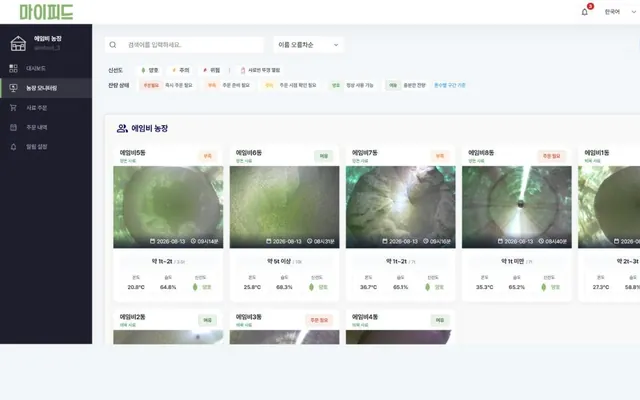
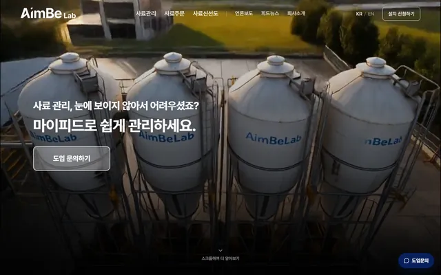

에임비랩 · 사내 서비스
농가가 쓰는
사료 관리 서비스.
2026년 7월 기준 130여 농가가 사용하는 마이피드에서 모니터링 화면, 관리자, 웹 알림을 만들고 고쳐 왔습니다.
FastAPI · Jinja2 · JavaScript
사례 자세히 보기
농장 모니터링 · 실제 서비스 화면
김준수프론트엔드 개발자
농가에서 쓰는 사료 관리 서비스의 웹 개발과 운영. 고객 문의를 요구사항으로 정리해 화면으로 옮깁니다.
앱 담당자와 요구사항·화면을 함께 정리하고, 구현과 운영까지 맡았습니다.
회사에서 운영 중인 서비스. 제가 맡지 않은 부분은 따로 적었습니다.
에임비랩 · 사내 서비스
2026년 7월 기준 130여 농가가 사용하는 마이피드에서 모니터링 화면, 관리자, 웹 알림을 만들고 고쳐 왔습니다.
FastAPI · Jinja2 · JavaScript
사례 자세히 보기
농장 모니터링 · 실제 서비스 화면
에임비랩 · 회사 홈페이지
기획·디자인·웹 구현을 맡아 고객 대상 소개로 다시 구성하고, 온라인 도입 문의를 사업팀 알림으로 연결했습니다.
Next.js · TypeScript
사례 자세히 보기
Componique, StartupQT, Eat Fit, Wairi까지.
작업 전체 보기정규직 에임비랩, 인턴 더이노베이터스.
그 전에는 육군 정보통신 병과와 학교.
이력 · 프로젝트에 대해 답해드립니다
AI가 이력서 데이터를 바탕으로 답합니다. 대화는 저장되지 않으며, 정확한 확인은 메일로 부탁드립니다.